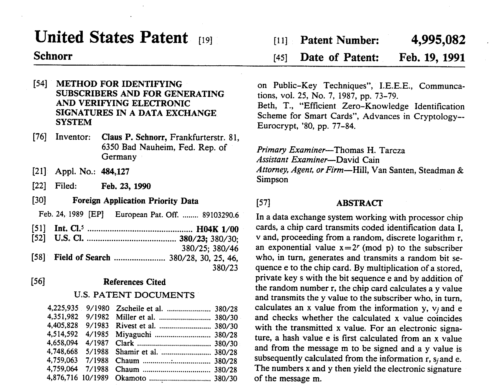
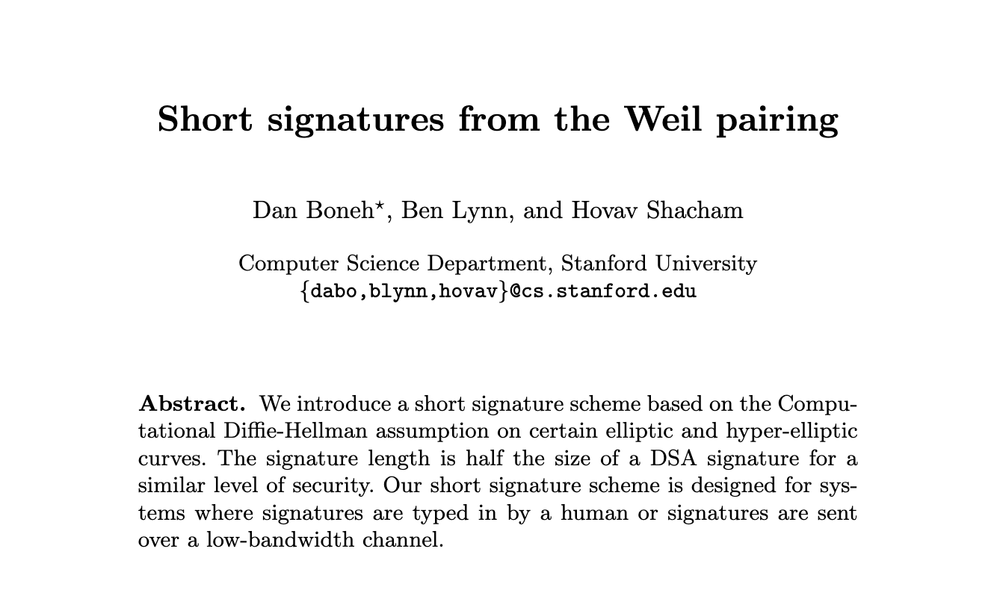

How to Share a Secret
Adi Shamir


k = 2
Secret: -3
(1, -1)
(3, 3)
(2, 1)
k = 3
Secret: +1
(2, 0)
(2, -3)
(-3, -5)
(3, -2)
(4, -5)
Schnorr, 1991
Boneh, Lynn, Shacham (BLS), 2003
Shamir Secret Sharing is suited for one-time key reconstruction